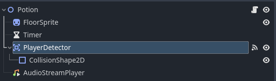

The potion is in essence the same kind of item as the other ones, it is just a bit more complex. As usual the potion (when on the floor) has a player area detector that will call a allow the player to pickup the item when on the ground What differs from other items however is that the potion must be deleted once consumed and the player must be healed. This was a bit tricky to implement at first as we couldn't reuse our drop item function and delete the item we had to create a new function that would do just that. First we make it so the weapon attack is a heal attack and then we call the function that will delete the item and heal the player.
public override void WeaponAttack(Player player,double damage)
{
player.Health = player.MaxHealth;
player.UpdateHealth();
Used = true;
player.DestroyItemInInventory();
}
Once that is done the function DestroyItemInInventory() is called and it will "drop" the item in the inventory and set the Used variable to true.
Then in the drop function we check if the item is a potion and if it is we check if it has been used and if it has we delete it.
public void Drop()
{
if (this.GetType() == typeof(Potion))
{
Potion potion = (Potion)this;
if (potion.Used)
{
QueueFree();
}
}
_playerDetector = GetNode("PlayerDetector");
_sprite = GetNode("FloorSprite");
_playerDetector.SetCollisionMaskValue(1, true);
_playerDetector.SetCollisionMaskValue(2, true);
_playerDetector.GetNode("CollisionShape2D").Disabled = false;
_sprite.Visible = true;
OnFloor = true;
}
Once it is done the player swaps back to the previous item in its inventory allowing for a smooth transition.